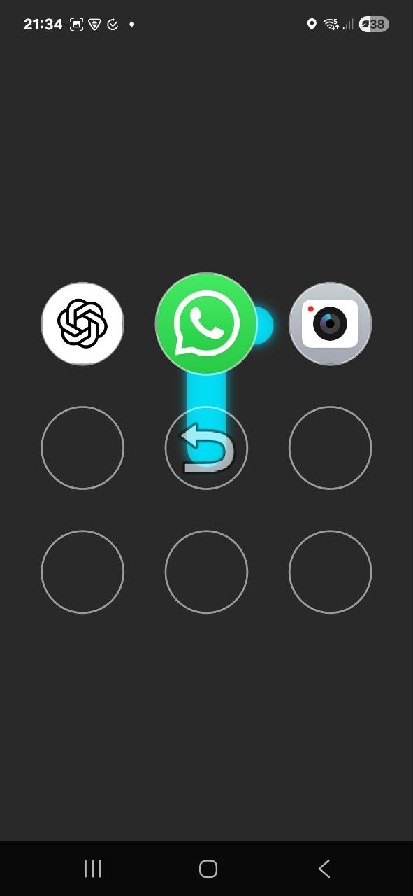

An Android launcher based on the pattern lock system
Technologies:
Anroid-Studio Java XML
Anroid-Studio Java XML
This custom minimalistic Android launcher is designed to enhance the app launching experience by utilizing a pattern lock system. For each app there is a unique pattern that the user must draw to open the app, bacause you can just remember the pattern and get fast access to the app.
